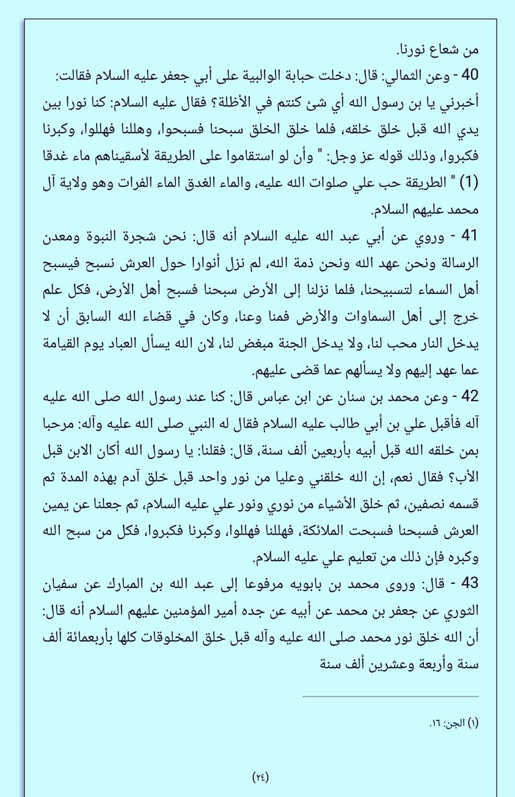

‘নবি আলাইহিস সালাম নূরের তৈরি’— ব্রেলভিদের এ ভ্রান্ত শি র কি আকিদাহ শি য়া দের থেকে…
১৫ মে, ২০২৪
‘নবি আলাইহিস সালাম নূরের তৈরি’— ব্রেলভিদের এ ভ্রান্ত শি র কি আকিদাহ শি য়া দের থেকে ধার করা। শি য়া দের কিতাবাদিতে এ সংক্রান্ত অগণিত (জাল) বর্ণনা পাবেন। উদাহরণস্বরূপ ‘বিহারুল আনওয়ার’ তাদের প্রসিদ্ধ কিতাব (২৫/২৪) দেখুন। অবশ্য তাদের মতে আলি রা.-ও নূরের তৈরি। নবি ও আলি তাঁরা দু'জন একই নূর থেকে তৈরি—
فقال: إن الله خلقني وعليا من نور واحد.
“নবি বলেন, নিশ্চয়ই আল্লাহ আমাকে ও আলিকে একই নূর থেকে সৃষ্টি করেছেন।” (নাউজুবিল্লাহ!)
‘নবি আলাইহিস সালাম নূরের তৈরি’— ব্রেলভিদের এ ভ্রান্ত শি র কি আকিদাহ শি য়া দের থেকে ধার করা। শি য়া দের কিতাবাদিতে এ সংক্রান্ত অগণিত (জাল) বর্ণনা পাবেন। উদাহরণস্বরূপ ‘বিহারুল আনওয়ার’ তাদের প্রসিদ্ধ কিতাব (২৫/২৪) দেখুন। অবশ্য তাদের মতে আলি রা.-ও নূরের তৈরি। নবি ও আলি তাঁরা দু'জন একই নূর থেকে তৈরি—
فقال: إن الله خلقني وعليا من نور واحد.
“নবি বলেন, নিশ্চয়ই আল্লাহ আমাকে ও আলিকে একই নূর থেকে সৃষ্টি করেছেন।” (নাউজুবিল্লাহ!)
